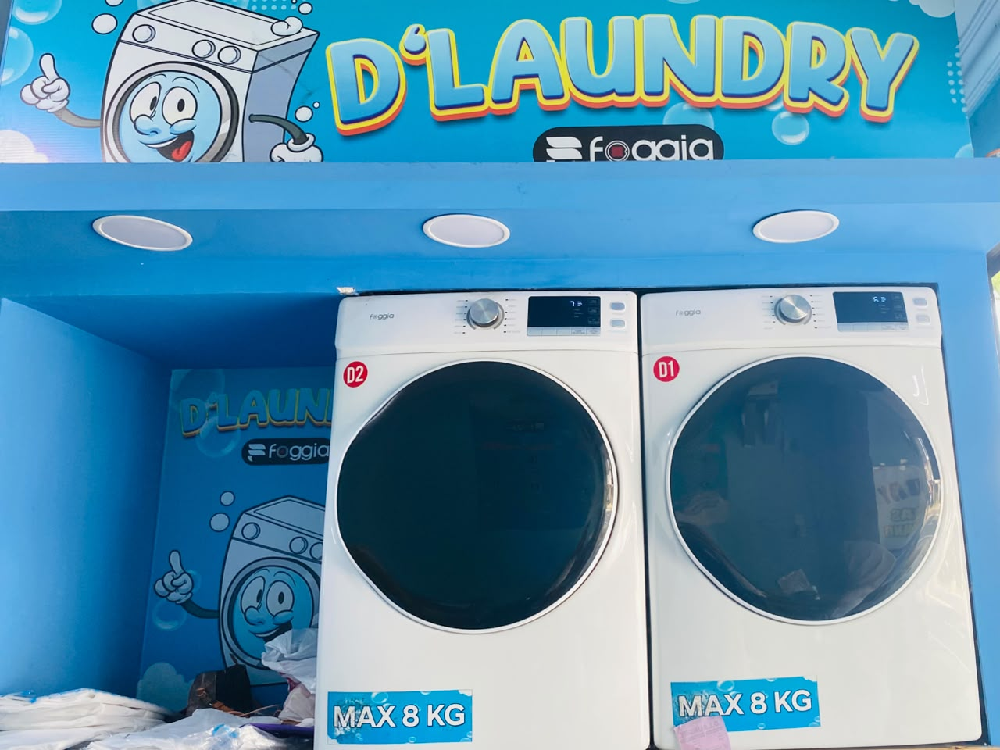

D'Laundry hadir untuk memenuhi kebutuhan laundry yang tidak sekedar bersih, namun memberikan layanan yang lebih kepada para konsumen dari sisi kualitas, kecepatan, dan harga yang bersaing. Dengan peralatan yang canggih, tenaga yang profesional, kami siap menyelesaikan laundry pakaian Anda hanya 8 jam. Nikmati layanan cucian yang bersih maksimal, rapi, and bergaransi, siap menemani aktivitas padat Anda sehari-hari.

Kami menggunakan mesin cuci and pengering berteknologi terbaik serta ramah lingkungan. Setiap pakaian Anda ditangani dengan detergen premium dan metode khusus untuk memastikan hasil yang jauh lebih bersih, wangi, higienis, dan aman bagi serat kain.
Kepuasan Anda adalah prioritas utama kami. D'Laundry selalu menjaga konsistensi kualitas di setiap cucian, didukung dengan layanan bergaransi untuk memberikan rasa aman dan kenyamanan penuh bagi setiap pelanggan setia kami.
Kami memahami betapa berharganya waktu Anda. Dengan manajemen operasional yang efisien and tim yang sigap, kami berkomitmen menyelesaikan cucian Anda tepat waktu sesuai paket pilihan Anda tanpa penundaan.
Jumat - Minggu : 08.00 - 20.00 WIB (Pasti Buka)
Senin - Kamis : Operasional Fleksibel / Kondisional.
Kami selalu siap melayani Anda di akhir pekan! Untuk hari Senin hingga Kamis, jadwal operasional kami menyesuaikan situasi. Libur berkala hanya dilakukan di hari besar atau hari kerja tertentu.
Kami tau jika pakaian merupakan kebutuhan primer yang harus terpenuhi
Kami menggunakan detergen yang lebih ramah lingkungan berbahan dasar Methyl Esther Sulfonate (MES) yang berasal dari bahan nabati namun memiliki daya ampuh yang efektif mengangkat kotoran membandel pada pakaian.
Berbagai jenis layanan kami sediakan sesuai dengan kebutuhan pelanggan : Regular Ekonomis , Paket Exclusive , Laundry Khusus Pakaian Bayi , Laundry Bed Cover , dan Boneka serta berbagai layanan lainnya.
Kami memberikan jaminan kepuasan kepada para pelanggan dan jika pelanggan tidak merasa puas dengan hasil proses kami, kami akan mengulang proses TANPA BIAYA TAMBAHAN.
Kami sangat menjaga kebersihan and privasi pakaian Anda. Di D'Laundry, setiap nota pakaian pelanggan dicuci menggunakan mesin yang terpisah secara personal, sehingga dijamin tidak akan pernah tercampur atau tertukar dengan milik orang lain.
Waktu Anda sangat berharga. Kami berkomitmen memberikan pelayanan yang disiplin dengan jaminan selesai sesuai estimasi waktu. Tersedia juga pilihan layanan ekspres kilat bagi Anda yang membutuhkan pakaian bersih dalam waktu cepat.
Pakaian Anda tidak hanya bersih, tetapi juga wangi segar sepanjang hari. Kami menggunakan pewangi premium grade-A ramah serat kain yang aromanya mengunci dan bertahan lama, menjaga kesegaran pakaian bahkan saat disimpan lama di lemari.